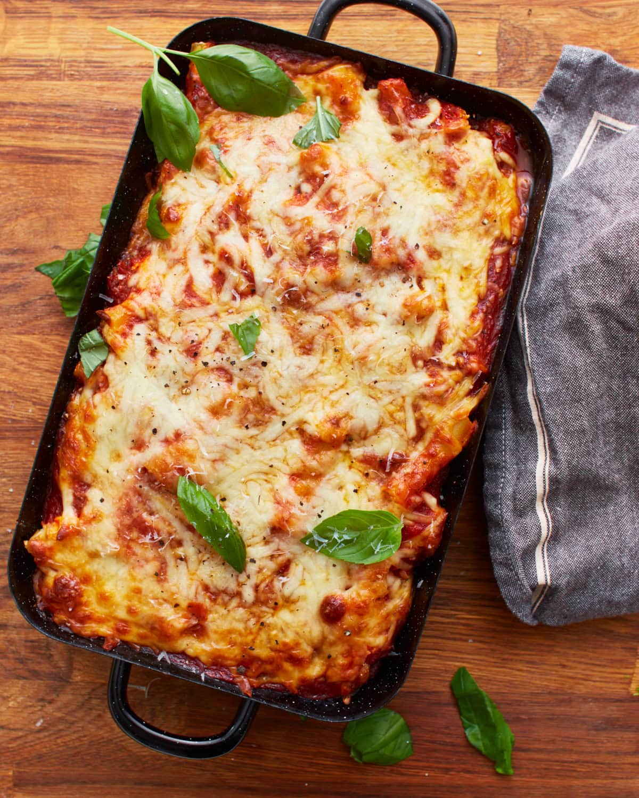

Home
Baked Ziti

Description
This tasty baked ziti dish cooked in a cast iron dutch oven over an open fire will make your friends and family asking for more.
Ingredients
- 1 lb. Ziti pasta (cooked)
- 1 lb. bulk Italian sausage
- Green Peppers (diced)
- Onion (diced)
- Mushrooms (sliced)
- 1 jar of spaghetti sauce
- Mozzarella chcese
- About 24 coals (if cooking over fire)
Instructions
- In a Dutch oven sitting on bottom heat, brown sausage until done.
- Add peppers and onions, stir and cook until crisp tender, 3-4 minutes.
- Add mushrooms and cook another 2 minutes. (With the veggies, add as much or as little as you like, omit what you don't like.)
- Add cooked pasta and spaghetti sauce.
- Add cubed or grated cheese and stir well.
- Cover and bake for about 30 minutes with 16 coals on top and 8 under, until heated through.
- Add more grated cheese on top and cover to melt.